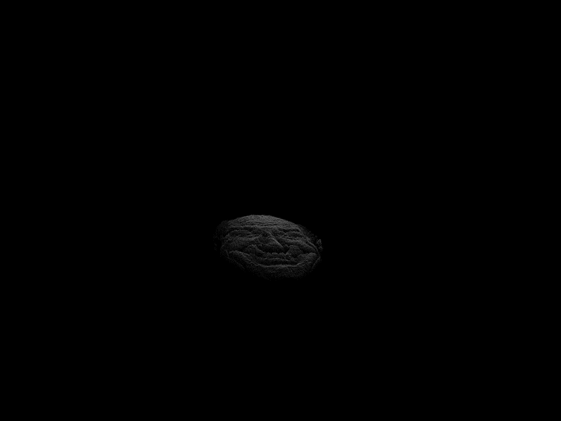

Screenshot slot
Heightfield rendering
01
Heightfield Rendering
I converted grayscale image data into 3D terrain geometry and rendered it through an OpenGL shader pipeline.
- Sampled image pixels into height-based vertex positions.
- Built separate VAO/VBO paths for point, wireframe, solid, and smoothed render modes.
- Added keyboard switching between render modes during runtime.
- Used shader uniforms for transform matrices, height scaling, exponent control, and render mode state.
- Implemented a JetColorMap shader path for height-based terrain coloring.
OpenGL
GLSL
Heightfields